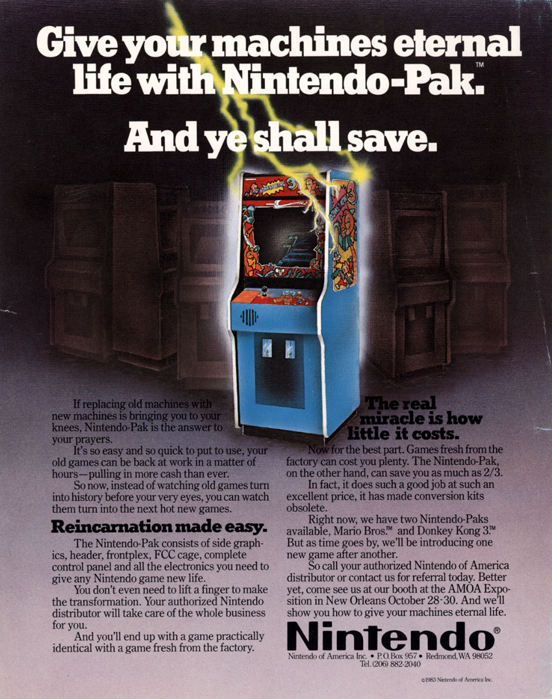

Nintendo's first major success in the video game industry was "Donkey Kong" (1981).

The Game Boy (1989) was the first portable gaming console by Nintendo.
"Super Mario Bros." (1985) became one of the best-selling video games of all time.
The Nintendo 64 (1996) introduced 3D gaming to the masses.
"The Legend of Zelda: Ocarina of Time" (1998) is often cited as one of the greatest games of all time.
The GameCube (2001) introduced the first online play for Nintendo consoles.
"Pokémon Red and Blue" (1996) was the start of the global Pokémon craze.
The Wii (2006) revolutionized gaming with motion-controlled gameplay.
The Nintendo DS (2004) featured a dual-screen design, introducing touch controls.
The Nintendo Switch (2017) supports both handheld and docked gaming.